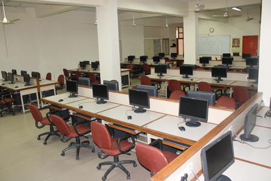
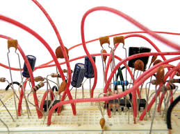
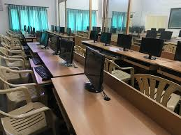
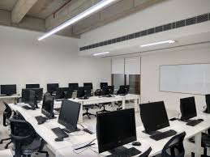
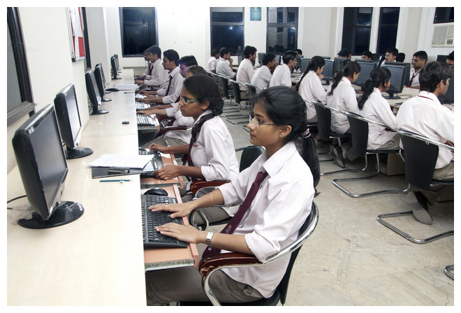

DEPARTMENT OF COMPUTER ENGINEERING
A Diploma in Computer Engineering program covers basic topics like computer programming, operating system, networking, database, etc. After completing the program, you can work as a programmer, system analyst, or cloud architect and maintain computers for other organisations.A diploma in computer science and technology can open up a wide range of career opportunities in a variety of industries. Graduates may work as software developers, web developers, database administrators, network administrators,systems analysts, and more.
Computer Programming Lab
 ☛Computer Programming Lab introduces the field of software programming to the students. Its major goal is to improve the programming abilities of students through the application of mathematics, science and engineering fundamentals for the development of software.
☛Computer Programming Lab introduces the field of software programming to the students. Its major goal is to improve the programming abilities of students through the application of mathematics, science and engineering fundamentals for the development of software.
☛It aims at providing students with understanding of programming essentials, pseudo codes and algorithms, data types, elementary control structures and functions used within the framework of imperative and structural programming paradigms.
Computer Fundamentals Lab
☛Computer fundamentals refers to the basics of using digital devices such as computers, smart phones and tablets. Computer used to only refer to the basics of using a computer and associated devices. however, it has since expanded to include most frequently-used digital devices.
☛Provide training and guidance to students and staff in I.T and Computers and in Technology. Provide an environment conducive for E-learning and research. Keep all the computer hardware and software and other items in good working condition.
Data Structures Lab
☛The essential goals of doing data structures lab is to acquire skills and knowledge in imperative programming. o the use of data structures to implement abstract data types such as stacks, queues, lists, sets, trees, and algorithms such as searching, and sorting.
☛Data structures bring together the data elements in a logical way and facilitate the effective use, persistence and sharing of data. They provide a formal model that describes the way the data elements are organized.
Digital Electronics Lab
☛Laboratory experiments in digital electronics are study of various logic gates, flip-flops, and counters. Employing a learn-by-doing approach, emphasizing the hands on experimental experience.Digital electronics is a field of electronics involving the study of digital signals and the engineering of devices that use or produce them.
☛Electronics laboratory is used for examining operating principles of the electronic devices and obtaining the characteristics of electronic circuit components. Design and practical applications of power supplies, amplifiers, oscillators and various digital electronic circuits are studied.
Database Management System Lab
 ☛A DataBase Management System (DBMS) is a software package with computer programs that controls the creation, maintenance, and use of a database. It allows organizations to conveniently develop databases for various applications. A database is an integrated collection of data records, files, and other objects.
☛A DataBase Management System (DBMS) is a software package with computer programs that controls the creation, maintenance, and use of a database. It allows organizations to conveniently develop databases for various applications. A database is an integrated collection of data records, files, and other objects.
☛A DBMS allows different user application programs to concurrently access the same database. DBMSs may use a variety of database models, such as the relational model or object model, to conveniently describe and support applications.
Multimedia Lab
☛Multimedia laboratory is a showroom featuring the latest multimedia technology that is hardware with software, including tools and applications. Various conditions in the developing world prevent the ready availability of such technology.
☛A multimedia computer system is a computer system that can create, import, integrate, store, retrieve, edit, and delete two or more types of media materials in digital form, such as audio, image, full-motion video, and text information.
Computer Hardware & Network Maintenance Lab
☛Computer Hardware & Network Maintenance course includes installing- diagnosing- troubleshooting- upgrading all hardware- operating system- software and network administration- in a timely and accurate fashion- and provides end user training and assistance whenever required.
☛This course provides an in-depth exploration of the fundamental elements of contemporary computing, from the complicated hardware circuits of computers to the complexity of interconnected digital ecosystems.It helps to support and maintain Personal Computer and its peripherals.
Web Technologies Lab
 ☛Web technology refers to the means by which computers communicate with each other using markup languages and multimedia packages. It gives us a way to interact with hosted information, like websites.Web Lab is a programming environment where you can make simple web pages using HTML and CSS.
☛Web technology refers to the means by which computers communicate with each other using markup languages and multimedia packages. It gives us a way to interact with hosted information, like websites.Web Lab is a programming environment where you can make simple web pages using HTML and CSS.
☛Web technologies refer to the various software tools, programming languages, and frameworks used in the development and deployment of websites and web applications. These technologies enable the creation of engaging, interactive, and dynamic online platforms that can be accessed via web browsers.
c++ Programming Lab
☛C++ is an object-oriented programming language which gives a clear structure to programs and allows code to be reused, lowering development costs. C++ is portable and can be used to develop applications that can be adapted to multiple platforms.
☛C++ is used in fields such as system software, game development, embedded systems, scientific computing and high-performance applications. The C++ standard library provides a range of coding utilities and functions, making it easy to develop complex software systems.
Java Programming Lab
☛A Java Programming lab manual is intended to provide a basic knowledge of java programming for students. To develop software development skills in java programming and Students will have the proficiency to develop projects in java programming.
☛The Java programming language originated as part of a research project to develop advanced software for a wide variety of network devices and embedded systems. The goal was to develop a small, reliable, portable, distributed, real-time operating platform.
Python Programming Lab
☛Python lab is a collection of resources to help you start using Python for developing solutions in your lab. From analyzing data collected with your experiments to writing software to control your setup. Get all the information directly to your inbox.
☛Python is often used as a support language for software developers, for build control and management, testing, and in many other ways. SCons for build control. Buildbot and Apache Gump for automated continuous compilation and testing.